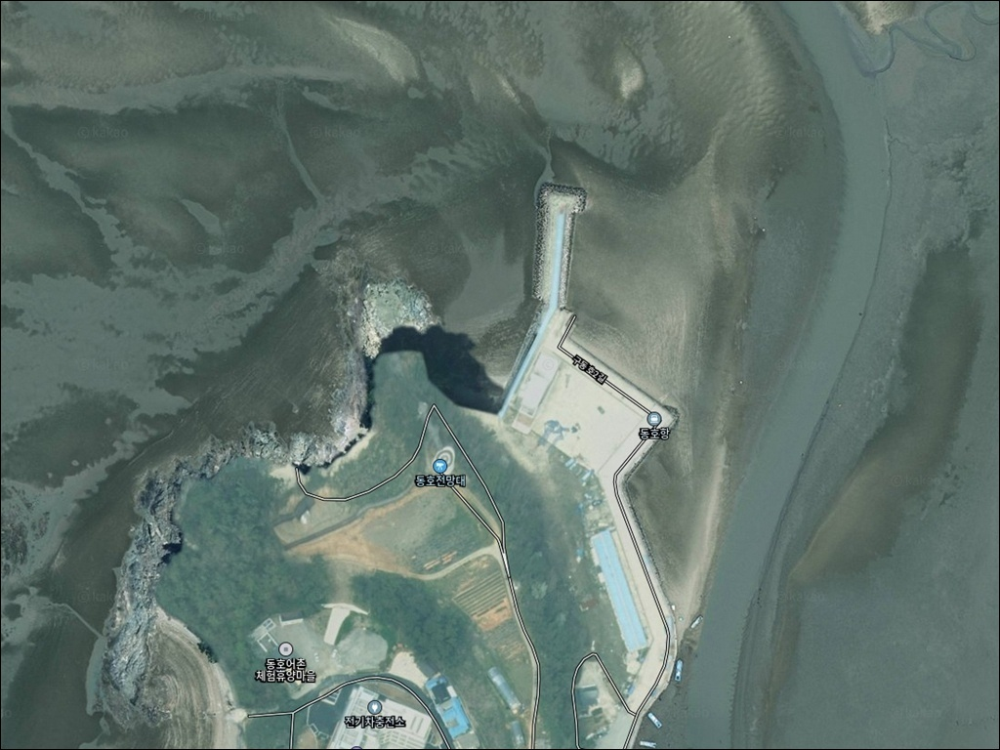
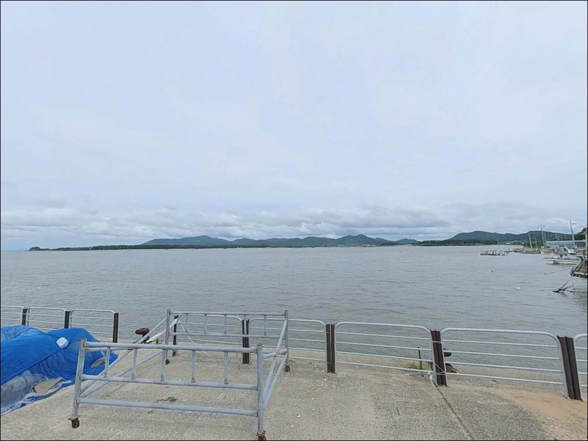
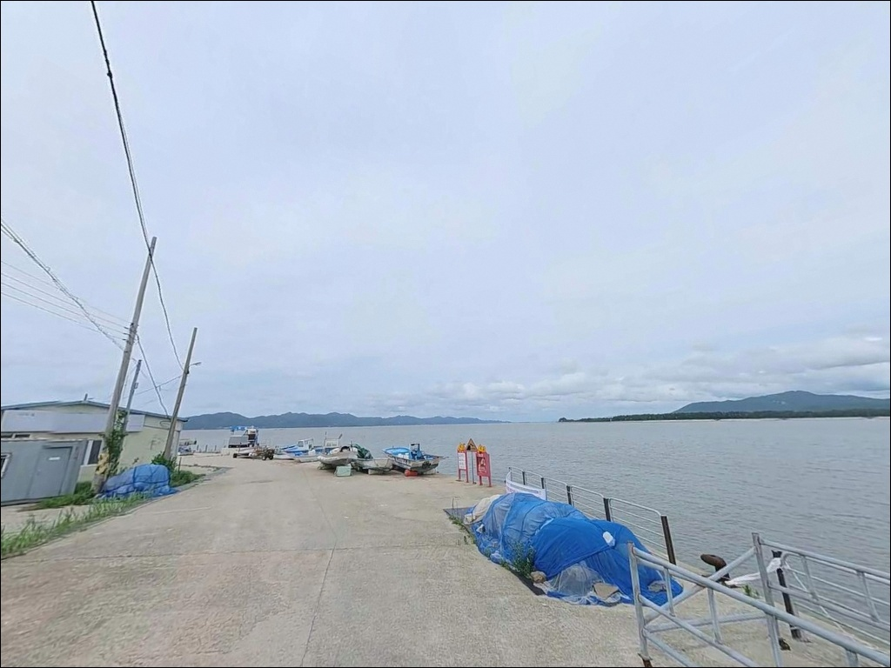
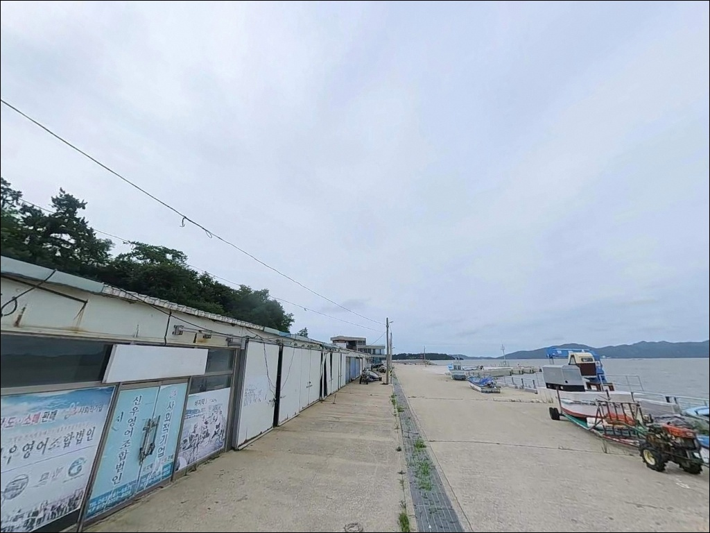
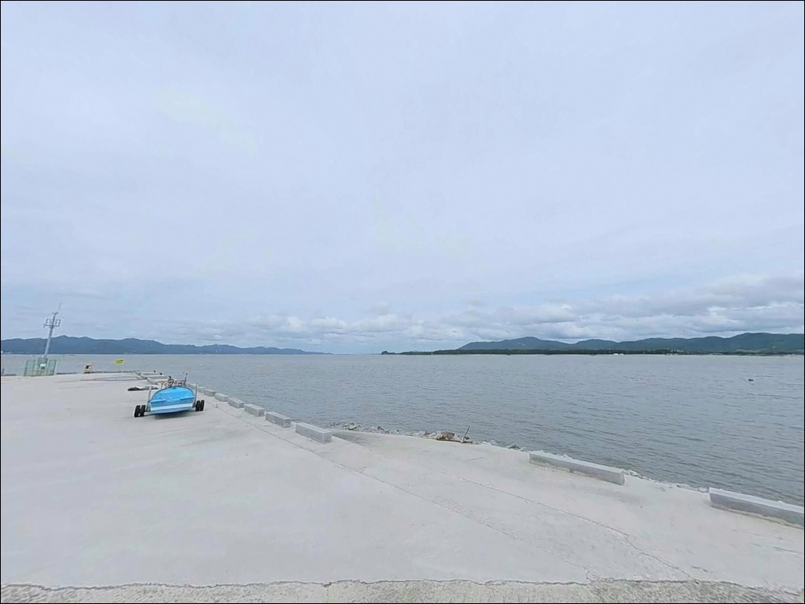
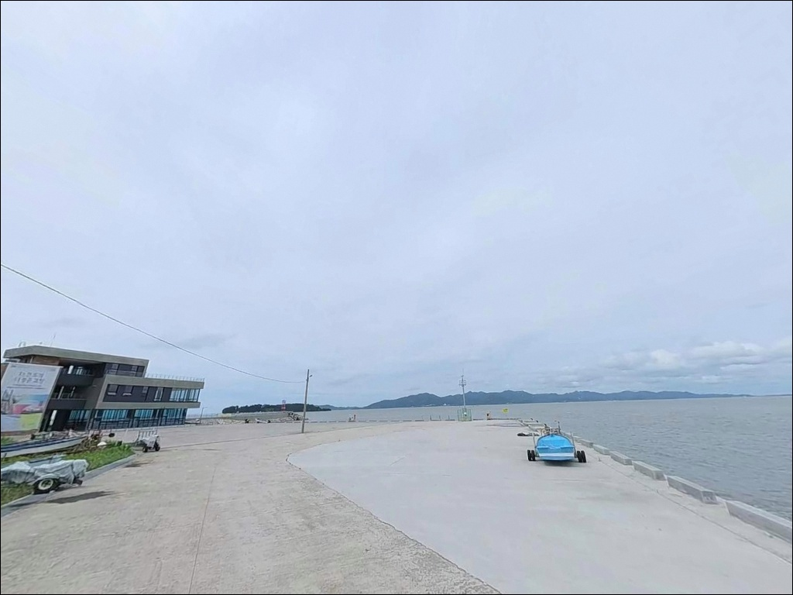
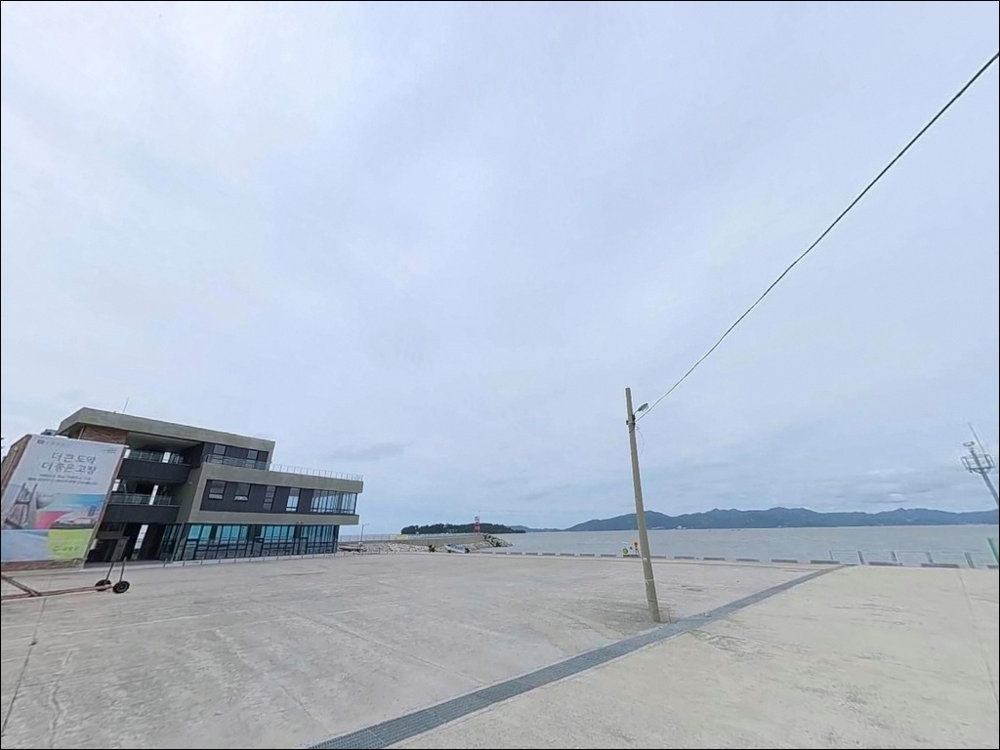
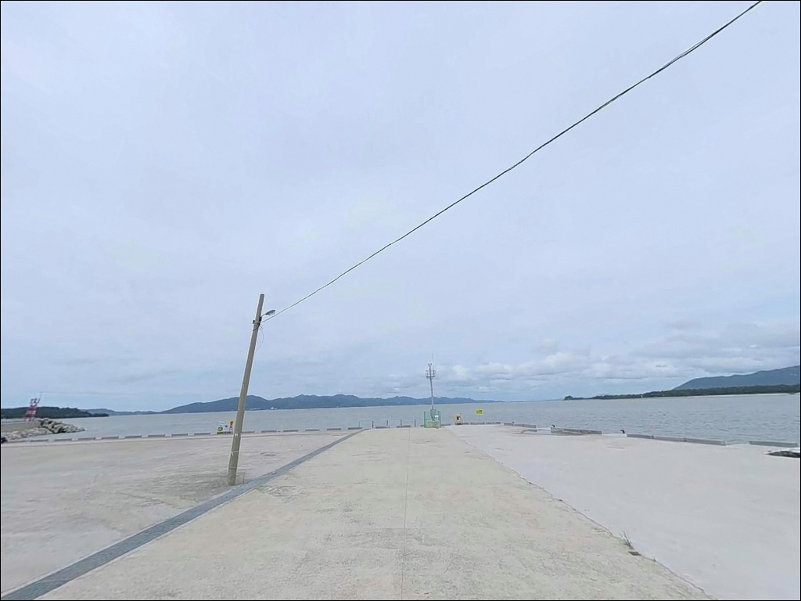
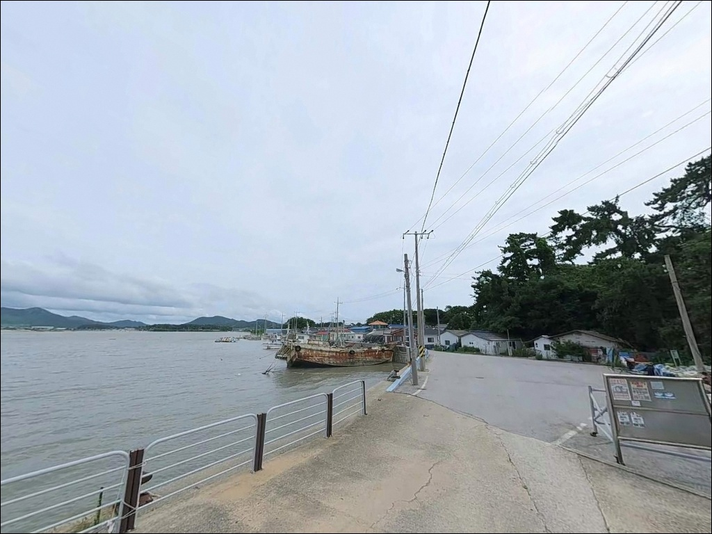

동호항, 전북 고창군 한적한 분위기 속 차박, 낚시를 함께 하기 좋은 곳
이 페이지에는 광고(제휴 링크 포함)가 있으며, 광고 링크를 통해 구매하면 운영자가 판매 수익 또는 수수료를 받을 수 있습니다. 포인트 사진: 카카오맵 스카이뷰·로드뷰. 이 페이지의 지도·사진 이미지는 카카오맵의 실제 서비스 이미지와 다를 수 있습니다.


포인트 안내
동호항
전북 고창군 해리면 동호리 701
동호항을 방문할 때 가장 많이 틀리는 판단은
물때를 확인하지 않고 진입 시각을 잡는 것입니다.
서해 갯벌 특성상 간조가 진행 중인 시간대에 도착하면
방파제 앞 바닥이 상당 부분 드러나
어떤 채비를 써도 수심 자체가 사라지는
상황이 됩니다.
동호항은 동호해수욕장 4km 백사장과 맞닿아 있는
고창 해리면의 지방어항으로,
어촌뉴딜300 사업으로 경관조명과
해안 둘레길·전망대·어촌체험센터가
갖춰진 관광형 어항입니다.
이 글은 동호항의 진입 동선,
물때 판단 기준, 방파제 낚시 스타일별 여건,
차박 환경에 집중합니다.
조황 단정이나 특정 어종 보장은
이 글의 범위에 포함되지 않습니다.

1. 진입 동선과 주차 여건
동호항은 국도 77호선이 직접 통과하는
구간에 위치해 있어,
포장도로로 항구까지 차량 진입이 가능합니다.
해수욕장과 연결된 진입 도로는
승용차에서 캠핑카까지 무난하게 접근할 수 있는
수준입니다.
주차는 동호해수욕장 공영주차장과
항 내부 선착장 인근 공터를
활용하는 방식이 현실적입니다.
어촌뉴딜300 사업으로 어촌체험센터와
복합시설이 조성되어 있어
주변 공용 주차 공간이 일부 갖춰진 상태입니다.
다만 어선 계류 구역과 어민 작업공간이
겹칠 수 있으므로 자리 선택에 주의가 필요합니다.
방파제 끝단은 낚시 메인 자리이지만,
외항 쪽 테트라포드 구간은
미끄러움과 낙상 위험이 있습니다.
석축 평탄면이나 내항 콘크리트 구간에서
자리를 잡는 것이 안전합니다.

2. 야간 체류와 차박 환경
동호항 인근은 어촌뉴딜300 경관조명이 설치되어
완전 암흑 구간은 아닙니다.
해수욕장 입구와 체험시설 주변 중심으로
조명이 분포하는 구조라,
처음 방문하는 낚시꾼도 야간 진입에
무리 없는 환경입니다.
항구 자체에서의 차박은
어선 조업 동선과 겹칠 수 있어
이른 새벽 소음과 통행 간섭이 생길 수 있습니다.
낚시 후 조용히 하룻밤 머무는 것이 목적이라면
해수욕장 해송숲 인근 구간이나
동호 국민여가캠핑장을 대안으로
검토하는 편이 조용합니다.
동호 국민여가캠핑장은
고창군 해리면 명사십리로 839에 위치하며,
예약은 국민여가캠핑 공식 채널에서
사전에 확인하는 방식입니다.
3면이 바다로 열린 구조라
서풍·북서풍 계절에는
바람 방향을 출발 전에 확인해야 합니다.


3. 주변 편의시설 및 인프라 현황
동호항에는 어촌뉴딜300 사업으로 조성된
어촌체험센터, 어구보관창고,
어촌복합센터, 전망대, 해안 둘레길이
갖춰진 상태입니다.
관광형 어항으로 정비된 만큼
주변 환경은 일반 방파제 포인트보다
인프라 수준이 높은 편입니다.
반경 3km 이내 편의점·마트 관련
확정 정보는 제한적입니다.
해리면 소재지 방향으로 국도 77호선을
따라 이동하면 생활 인프라를
해결할 수 있는 구조로 보입니다.
완전 자급 체제로 진입하는 것이
현실적인 준비 방식입니다.
식수, 얼음, 채비 소품, 연료는
출발 전에 갖추고 가는 편이 안전합니다.

4. 출조 전 반드시 확인할 것
동호항 방문에서 가장 먼저 챙길 것은
물때입니다.
서해 지방어항에서 물때 계산 없이
간조 시간대에 입장하면
수심 부족으로 어떤 채비도
제 역할을 하기 어렵습니다.
바다타임에서 해리면 기준 물때를 확인하고
중들물 이후 만조 전후 타이밍으로
출발 시각을 맞추는 것이 기본입니다.
서해안 기상은 변화 폭이 크고
풍랑 영향을 직접 받는 구조라,
당일 아침 기상청 해상예보와
파고 확인을 빠뜨리지 않아야 합니다.
채비 손실이 잦은 구조이므로
여분 채비는 넉넉하게 준비하는 편이 좋습니다.
야간 낚시를 병행할 경우
헤드랜턴과 여분 조명을 반드시 챙겨야 합니다.
경관조명 범위를 벗어나는 구간이 생기면
발판 확인이 어려워집니다.
구명조끼 착용은 낮이든 밤이든
방파제 낚시의 기본 안전 조건이며,
테트라포드 위 진입은 자제하는 것이
원칙입니다.

5. 지형이 만드는 낚시 여건
동호항의 낚시 여건을 이해하려면
갯벌형 서해 소형 어항이라는
지형 특성부터 파악해야 합니다.
인접 해수욕장 구간의 수심이
0.5~1.5m 수준으로 기록된 곳으로,
내항은 갯벌 퇴적 영향이 커서
조류가 약하고 수심이 얕은
구간이 넓게 분포합니다.
낚시 여건이 살아나는 구간은
방파제 끝단 외항 방향입니다.
이 구간은 내항보다 수심이 확보되고
조류 소통이 원활한 편으로,
원투 채비를 멀리 내보내기 적합한
구조 조건을 갖추고 있습니다.
물때란 조석의 주기에 따라
바닷물이 들어오고 빠지는 시간대를 구분한
기준 단위로,
서해 낚시에서 조과를 결정하는
핵심 변수입니다.
사리 전후에는 조류가 강해지고,
조금 전후에는 흐름이 안정되는 패턴입니다.
들물이 들어오는 시간대에
낚시 여건이 가장 살아나는 구조입니다.
방파제 끝단은 내항보다 수심이 확보되는 구간으로,
동호항에서 낚시 자리를 잡을 때
외항 방향을 우선 검토해야 합니다.
최신 조황은 방문 전에
"동호항 낚시", "고창 방파제 낚시",
"구시포 조황" 키워드로
검색해 보시기 바랍니다.


6. 동호항에 어울리는 낚시 스타일
이 포인트에서 가장 무난하게 적용되는 방식은
원투낚시입니다.
원투낚시란 봉돌에 바늘 채비를 연결해
먼 거리로 던진 뒤 바닥 어종을 기다리는
낚시 방식입니다.
갯벌과 모래 바닥이 섞인 서해 소형 방파제 구조에서
가장 안정적으로 통하는 스타일이며,
방파제 외항 방향으로 멀리 보내는
세팅이 이 포인트에 맞습니다.
루어낚시와 에깅도 시도해볼 수 있습니다.
방파제 석축과 테트라포드 주변에
수중 기복이 있는 구간이라면
우럭 계열 루어 탐색이 가능한 구조입니다.
계절에 따라 갑오징어·주꾸미 에깅도
방파제 끝단 외항 방향에서
시즌에 맞춰 시도해볼 만한 선택지입니다.
찌낚시는 조류가 흐르는 들물 구간에
방파제 콧부리나 내·외항 경계 구간에서
운용이 가능합니다.
망둥어·숭어·학꽁치 같은
서해 방파제에서 일반적으로 기대해볼 수 있는
어종을 대상으로 한 생활낚시 스타일에도
이 포인트 구조가 잘 맞는 편입니다.
서해 지방어항에서 물때 계산 없이
간조 시간대에 입장하면
수심 부족으로 어떤 채비도
제 역할을 하기 어렵습니다.

7. 여건이 맞지 않을 때 이동할 대안 포인트
동호항 여건이 기대에 못 미치거나
수심이 충분히 확보되지 않을 경우
가장 먼저 이동할 곳은
구시포방파제입니다.
동호항 남쪽 방향 고창 상하면에 위치하며,
동일 해안선 상의 방파제로
테트라포드와 외항 구조를 갖추고
낚시 커뮤니티에서의 언급 빈도가
동호항보다 높은 포인트입니다.
북쪽 방향으로 이동하면
부안 격포항과 왕포항이 있습니다.
서해 방파제·갯바위 낚시 포인트로
알려진 곳으로, 포인트 규모 면에서
충분한 대안이 됩니다.
동호항을 처음 방문하는 일정이라면
격포항과 묶어두는 동선이
이 권역에서 효율적입니다.
차박 여건이 맞지 않을 경우
동호 국민여가캠핑장을 대안으로
활용할 수 있습니다.
고창군 해리면 명사십리로 839에 위치하며
예약 기반 일반야영장 형태로 운영됩니다.
노지 차박보다 체류 환경이 안정적인
선택지입니다.

원투 한 대 들고 들물 타이밍 맞췄다면
동호항은 충분합니다
방파제 낚시를 처음 접하는 낚시꾼이나
서해 원투낚시에 익숙한 분이라면
동호항의 진입 조건은 낮고
접근이 수월한 포인트입니다.
어촌뉴딜 시설로 주변 환경이 정비되어 있고,
동호해수욕장 인프라를 함께 쓸 수 있다는 점도
장점으로 작동합니다.
반면 갯벌형 서해 어항이라는 구조상
물때를 맞추지 않으면
방파제에 도착해도 쓸 수 있는 수심이
없어지는 상황이 됩니다.
바다타임으로 물때 확인,
기상예보 체크, 여분 채비 준비,
이 세 가지가 갖춰진 출조라면
서해 갯벌 특성을 즐기며
낚시할 수 있는 포인트입니다.
낚시 후 해송숲 옆에서 하룻밤 머무는
차박 여행자라면,
동호 국민여가캠핑장 예약 여부를
출발 전에 먼저 확인해두면
낚시와 야간 체류를 자연스럽게
엮을 수 있는 동선이 됩니다.